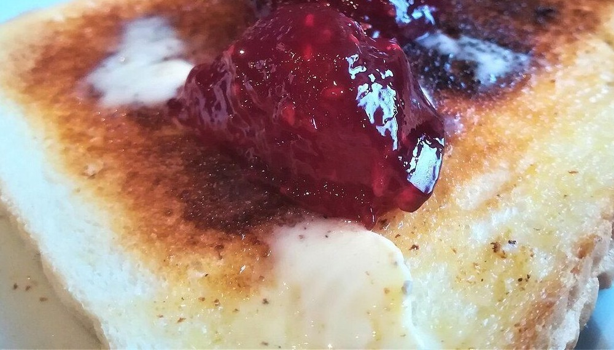

掲載写真はフリー素材のイメージです。店舗の実際の商品・店内ではありません。他地域(海外を含む)で撮影されたものや、撮影地が不明なものを含みます。
メニュー
メニュー・価格は準備中(お問い合わせください)
商品名・価格・原材料・アレルギー情報は、お電話またはInstagramでご確認ください。
焼き色
こんがりとした皮の色合いを、写真で表現しました。(写真はイメージです)


品名 準備中(お問い合わせください)価格 準備中(お問い合わせください)
ふっくら
やわらかな生地の表情をイメージした写真です。
実際の商品については、お問い合わせください。

品名 準備中(お問い合わせください)価格 準備中(お問い合わせください)
ひと塗り
バターやジャムを添えたトーストの雰囲気を、イメージ写真でお届けします。



品名 準備中(お問い合わせください)価格 準備中(お問い合わせください)
ご注文について
掲載写真は雰囲気を伝えるイメージで、実際の商品ではありません。ご注文・お取り置きについては、お電話でお問い合わせください(可否は準備中(お問い合わせください))。